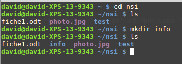
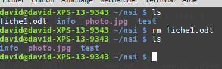

TP: Les commandes de base en ligne de commande
Ce TP est une adaptation du TP proposé sur pixees.fr sous licence CC-BY-SA créé par David Roche.
À la
préhistoiredes systèmes d’exploitation, ces derniers étaient dépourvus d’interface graphique (système de fenêtrespilotablesà la souris), toutes les interactionssystème d'exploitation - utilisateurse faisaient par l’intermédiaire delignes de commandes(suites de caractères, souvent ésotériques, saisies par l’utilisateur). Aujourd’hui, même si les interfaces graphiques modernes permettent d’effectuer la plupart des opérations, il est important de connaitre quelques-unes de ces lignes de commandes.
Pour saisir des lignes de commandes, nous allons utiliser une émulation du système d’exploitation linux dans le navigateur proposée par Fabrice Bellard disponible à l’adresse suivante:
https://bellard.org/jslinux/vm.html?url=https://bellard.org/jslinux/buildroot-x86.cfg
Notion d’utilisateur et de machine
Ouvrez une console, vous devriez avoir quelque chose qui ressemble à cela :
Nous avons ci-dessus la console de l’utilisateur root qui utilise un ordinateur qui se nomme localhost (root@localhost).
Vous pouvez rentrer vos commandes après le signe #.
Essayez les commandes suivantes:
whoamihostname
Système de fichiers linux
Principalement nous allons, grâce à la ligne de commande, travailler sur les fichiers et les répertoires. Dans les systèmes de type UNIX (par exemple GNU/Linux ou macOS), nous avons un système de fichier en arborescence :
 CC -BY-SA David Roche via pixees.fr
CC -BY-SA David Roche via pixees.fr
Dans le schéma ci-dessus on trouve des répertoires (noms entourés d’un rectangle, exemple : home) et des fichiers (uniquement des noms grub.cfg). À noter : les extensions des noms de fichiers, par exemple le cfg de grub.cfg, ne sont pas obligatoires dans les systèmes de type UNIX, par exemple, bash est bien un nom de fichier et il n’a pas d’extension.
On parle d’arborescence, car ce système de fichier ressemble à un arbre à l’envers.
Comme vous pouvez le constater, la base de l’arbre s’appelle la racine de l’arborescence et se représente par un /
Chemin absolu ou chemin relatif ?
Pour indiquer la position d’un fichier (ou d’un répertoire) dans l’arborescence, il existe 2 méthodes : indiquer un chemin absolu ou indiquer un chemin relatif. Le chemin absolu doit indiquer le chemin depuis la racine. Par exemple le chemin absolu du fichier fiche.ods sera : /home/elsa/documents/fiche.ods
Remarquez que nous démarrons bien de la racine / (attention les symboles de séparation sont aussi des /)
Il est possible d’indiquer le chemin non pas depuis la racine, mais depuis un répertoire quelconque, nous parlerons alors de chemin relatif :
Le chemin relatif permettant d’accéder au fichier photo_1.jpg depuis le répertoire max est : images/photo_vac/photo_1.jpg
Remarquez l’absence du / au début du chemin (c’est cela qui nous permettra de distinguer un chemin relatif et un chemin absolu).
Imaginons maintenant que nous désirions indiquer le chemin relatif pour accéder au fichier gdbd_3.jpg depuis le répertoire photos_vac.
Comment faire ?
Il faut remonter d’un niveau dans l’arborescence pour se retrouver dans le répertoire images et ainsi pouvoir repartir vers la bonne branche. Pour ce faire il faut utiliser 2 points : ..
../ski/gdbd_3.jpg
Il est tout à fait possible de remonter de plusieurs crans : ../../ depuis le répertoire photos_vac permet de remonter dans le répertoire max
En vous basant sur l’arborescence ci-dessus, déterminez le chemin absolu permettant d’accéder au fichier :
catrapport.odt
Toujours en vous basant sur l’arborescence ci-dessus, déterminez le chemin relatif permettant d’accéder au fichier :
rapport.odtdepuis le répertoireelsafiche.odsdepuis le répertoireboulot
Attention à la casse
Les systèmes de type UNIX sont sensibles à la casse (il faut différencier les caractères majuscules et les caractères minuscules) : le répertoire Documents et le répertoire documents sont 2 répertoires différents.
La commande cd
La commande cd permet de changer le répertoire courant. Il suffit d’indiquer le chemin (relatif ou absolu) qui permet d’atteindre le nouveau répertoire :
Par exemple (en utilisant l’arborescence ci-dessus) :
- si le répertoire courant est le répertoire
elsaet que vousvoulez vous rendredans le répertoiredocuments, il faudra saisir la commande :cd documents(relatif) oucd /home/elsa/documents(absolu) - si le répertoire courant est le répertoire
photos_vacet que vousvoulez vous rendredans le répertoireski, il faudra saisir la commande :cd ../ski(relatif) oucd /home/max/images/ski(absolu) - si le répertoire courant est le répertoire
boulotet que vousvoulez vous rendredans le répertoiredocuments, il faudra saisir la commande :cd ..(relatif) oucd /home/elsa/documents(absolu)
Toujours en utilisant l’arborescence ci-dessus, quelle est la commande à saisir si le répertoire courant est le répertoire home et que vous voulez vous rendre dans le répertoire boulot (vous utiliserez d’abord un chemin absolu puis un chemin relatif)
La commande ls
La commande ls permet de lister le contenu du répertoire courant.
 CC -BY-SA David Roche via pixees.fr
CC -BY-SA David Roche via pixees.fr
Dans l’exemple ci-dessus, depuis le répertoire personnel de l’utilisateur david, nous passons dans le répertoire nsi à l’aide d’un cd nsi, puis nous affichons le contenu de ce répertoire nsi à l’aide de la commande ls. Nous trouvons dans le répertoire nsi : 2 fichiers (fiche1.odt et photo.jpg) et un répertoire (test).
Après avoir ouvert une console, utilisez la commande ls depuis votre répertoire personnel.
La commande mkdir
La commande mkdir permet de créer un répertoire dans le répertoire courant. La commande est de la forme mkdir nom_du_répertoire
 CC -BY-SA David Roche via pixees.fr
Remarque : il est préférable de ne pas utiliser de caractères accentués dans les noms de répertoire (ou de fichier). Il en est de même pour les espaces (à remplacer par des caractères tirets bas _)
Après avoir ouvert une console, utilisez la commande mkdir afin de créer un répertoire test_nsi dans votre répertoire personnel.
La commande rm
La commande rm permet de supprimer un fichier ou un répertoire. La commande est de la forme rm nom_du_répertoire_ou_nom_du_fichier, pour supprimer un répertoire non vide, utiliser rm -rf ...
 CC -BY-SA David Roche via pixees.fr
La plupart des commandes UNIX peuvent être utilisées avec une ou des options. Par exemple, pour supprimer un répertoire non vide, il est nécessaire d’utiliser la commande rm avec l’option -r : rm -r nom_du_répertoire
 CC -BY-SA David Roche via pixees.fr
CC -BY-SA David Roche via pixees.fr
La commande touch
La commande touch permet de créer un fichier vide. La commande est de la forme touch nom_du_fichier_à_créer
 CC -BY-SA David Roche via pixees.fr
CC -BY-SA David Roche via pixees.fr
La commande cp
La commande cp permet de copier un fichier. La commande est de la forme cp /répertoire_source/nom_fichier_à_copier /répertoire_destination/nom_fichier
 CC -BY-SA David Roche via pixees.fr
CC -BY-SA David Roche via pixees.fr
Copie avec renommage
Le nom du fichier destination n’est pas obligatoirement |le même que le nom du fichier source (on peut avoir cp fic.txt info/fiche.txt)
Créer et supprimer du contenu
Placez-vous dans le répertoire test_nsi créé précédemment. Créez un fichier test.txt. Créez un répertoire doc. Copiez le fichier test.txt dans le répertoire doc. Effacez le répertoire doc (et son contenu).
Gestion des utilisateurs et des groupes
Les systèmes de type UNIX sont des systèmes multi-utilisateurs, plusieurs utilisateurs peuvent donc partager un même ordinateur, chaque utilisateur possédant un environnement de travail qui lui est propre.
Chaque utilisateur possède certains droits lui permettant d’effectuer certaines opérations et pas d’autres. Le système d’exploitation permet de gérer ces droits très finement. Un utilisateur un peu particulier possède tous les droits : ce super utilisateur est appelé administrateur ou root.
C’est cet administrateur qui pourra attribuer ou retirer certains droits aux autres utilisateurs. Au lieu de gérer les utilisateurs un par un, il est possible de créer des groupes d’utilisateurs. L’administrateur attribue des droits à un groupe au lieu d’attribuer des droits particuliers à chaque utilisateur.
Création d'un nouvel utilisateur avec son répertoire `home`
Comme vous êtes actuellement l’utilisateur root vous avez tous les droits. Vous pouvez ainsi ajouter un nouvel utilisateur.
adduser toto
Vous pouvez vérifier que cette commande crée en même temps un répertoire personnel dans le dossier /home pour cet utilisateur: ls /home.
Vous pouvez lancer le shell avec cet utilisateur grâce à la commande: su -p toto, puis tenter de créer des fichiers, supprimer des répertoires comme vous allez le voir c’est pas toujours possible!
Droits des utilisateurs et groupes
Comme nous venons de le voir, chaque utilisateur possède des droits qui lui ont été octroyés par le super utilisateur. Nous nous intéresserons ici uniquement aux droits liés aux fichiers, mais vous devez savoir qu’il existe d’autres droits liés aux autres éléments du système d’exploitation ((imprimante, installation de logiciels…).
Les fichiers et les répertoires possèdent 3 types de droits :
- les droits en lecture (symbolisés par la lettre r) : est-il possible de lire le contenu de ce fichier
- les droits en écriture (symbolisés par la lettre w) : est-il possible de modifier le contenu de ce fichier
- les droits en exécution (symbolisés par la lettre x) : est-il possible d’exécuter le contenu de ce fichier (quand le fichier du code exécutable)
Il existe 3 types d’utilisateurs pour un fichier ou un répertoire :
- le propriétaire du fichier (par défaut c’est la personne qui a créé le fichier), il est symbolisé par la lettre u
- un fichier est associé à un groupe, tous les utilisateurs appartenant à ce groupe possèdent des droits particuliers sur ce fichier. Le groupe est symbolisé par la lettre g
- tous les autres utilisateurs (ceux qui ne sont pas le propriétaire du fichier et qui n’appartiennent pas au groupe associé au fichier). Ces utilisateurs sont symbolisés la lettre
o
Il est possible d’utiliser la commande ls avec l’option -l afin d’avoir des informations supplémentaires.

Prenons la première ligne :
-rw-r--r-- 1 david david 0 avril 13 19:58 fic.txt
Lisons cette ligne de gauche à droite :
- le premier symbole
-signifie que l’on a affaire à un fichier, dans le cas d’un répertoire, nous aurions und(voir la 2e ligne) - les 3 symboles suivants
rw-donnent les droits du propriétaire du fichier : lecture autorisée (r), écriture autorisée (w), exécution interdite (- à la place de x) - les 3 symboles suivants
r--donnent les droits du groupe lié au fichier : lecture autorisée (r), écriture interdite (- à la place de w), exécution interdite (- à la place de x) - les 3 symboles suivants
r--donnent les droits des autres utilisateurs : lecture autorisée (r), écriture interdite (- à la place de w), exécution interdite (- à la place de x) - le caractère suivant
1donne le nombre de liens (nous n’étudierons pas cette notion ici) - le premier
davidreprésente le nom du propriétaire du fichier - le second
davidreprésente le nom du groupe lié au fichier - le
0représente la taille du fichier en octet (ici notre fichier est vide) avril 13 19:58donne la date et l’heure de la dernière modification du fichierfic.txtest le nom du fichier
Prenons la deuxième ligne :
drwxr-xr-x 2 david david 4096 avril 13 20:05 info
Lisons cette ligne de gauche à droite :
- le premier symbole
dsignifie que l’on a un répertoire - les 3 symboles suivants
rwxdonnent les droits du propriétaire du répertoire : lecture du contenu du répertoire autorisée (r), modification du contenu du répertoire autorisée (w), il est possible de parcourir le répertoire (voir le contenu du répertoire) (x) - les 3 symboles suivants
r-xdonnent les droits du groupe lié au répertoire : modification du contenu du répertoire interdite (- à la place de w) - les 3 symboles suivants
r-xdonnent les droits des autres utilisateurs : modification du contenu du répertoire interdite (- à la place de w) - le caractère suivant
2donne le nombre de liens (nous n’étudierons pas cette notion ici) - le premier
davidreprésente le nom du propriétaire du répertoire - le second
davidreprésente le nom du groupe lié au répertoire - le
4096représente la taille du répertoire en octets avril 13 20:05donne la date et l’heure de la dernière modification du contenu du répertoireinfoest le nom du répertoire
Analysez la 3e ligne du résultat de la commande ls -l ci-dessus
Il est important de ne pas perdre de vu que l’utilisateur root possède tous les droits sur tous les fichiers et tous les répertoires, nous aurons donc pour root systématiquement rwx.
Le propriétaire d’un fichier peut modifier les permissions d’un fichier ou d’un répertoire à l’aide de la commande chmod. Pour utiliser cette commande, il est nécessaire de connaitre certains symboles :
- Les symboles liés aux utilisateurs :
ucorrespond au propriétaire,gcorrespond au groupe lié au fichier (ou au répertoire),ocorrespond aux autres utilisateurs etacorrespond àtout le monde(permet de modifieru,getoen même temps) - les symboles liés à l’ajout ou la suppression des permissions :
+on ajoute une permission,-on supprime une permission,=les permissions sont réinitialisées (permissions par défaut) - les symboles liés aux permissions :
r: lecture,w: écriture,x: exécution.
La commande chmod à cette forme :
chmod [u g o a] [+ - =] [r w x] nom_du_fichier
par exemple
chmod o+w toto.txt
attribuera la permission écriture pour le fichier toto.txt aux autres utilisateurs
Il est possible de combiner les symboles :
chmod g-wx toto.txt
La commande chmod ci-dessus permet de supprimer la permission écriture et la permission exécution pour le fichier toto.txt au groupe lié au fichier
Une fois de plus, root a tous les droits sur l’ensemble des fichiers et des répertoires, il peut donc utiliser la commande chmod sur tous les répertoires et tous les fichiers.
Analysez attentivement l’enchainement de commandes suivantes :
Créez un répertoire test_nsi2 dans votre répertoire personnel. Placez-vous dans le répertoire test_nsi2. Créez un fichier titi.txt, vérifiez les permissions associées à ce fichier. Modifiez les permissions associées au fichier titi.txt afin que les autres utilisateurs aient la permission écriture